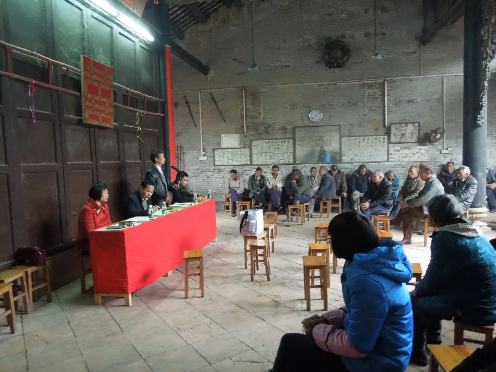
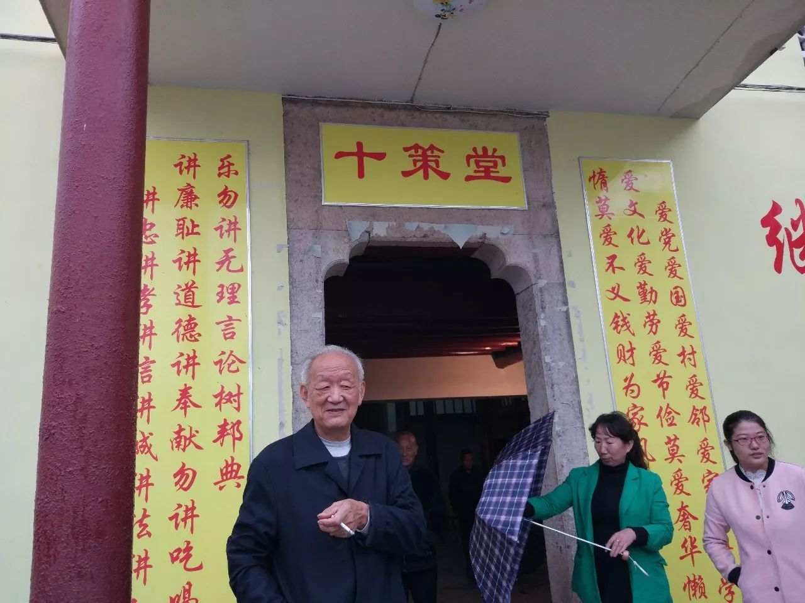

乡村“新治理”十三种模式
党的十九大报告提出“实施乡村振兴战略”“推动社会治理重心向基层下移”，提速乡村治理现代化进程；而“健全自治、法治、德治相结合的乡村治理体系”，为这一进程标识了工作重心。
事实上，党的十八大以来，不少地方以创新勇气试新举，因地制宜谋善治，探索多种治理新路径，走出乡村凋敝困局。
十三种模式中，或聚焦体制创新，优化组织架构，重构基层权力运行体系，实现治理体制多元（如监委会、理事会、议事会、政经分离）；或探索自治、法治、德治三位一体，探路治理体系多元（如三治合一、新家训家风）；或瞄准公共服务，寓管理于服务，凸显治理功能多元（如公共服务站、政府购买服务）；或借力外智，充实乡村精英人才队伍，形成治理主体多元（如新乡贤、大学生村官、第一书记）；或以融合思维激发活性元素的引领、贯通和渗透效应，力求治理机制多元（如党建＋、互联网＋）。
十三种模式视角多样，各有侧重，又互补交融，有机统一。它们从乡土中国的痛点、难点中探寻发力点、亮点，凸显问题导向和建设性取向；它们从田园、从草根探寻路径，彰显可贵的首创智慧和务实底色。
当前乡村治理探索成效显著的十三种模式
模式一：政经分离
【专家推介】中国社会科学院农村发展研究所研究员李国祥
农村集体经济发展壮大后，需要按照市场经济规律运行，只有跟乡村自治组织分开，集体经济才能得到更充分发展；与此相对应，基层自治组织只有将经济职能剥离以后，才能更专业化、精细化，给村民提供更优质的服务。
广东佛山南海区、浙江温州等地的政经分离是一个非常有意义的基层治理实践。通过经济组织与自治组织分离，两者分别履行各自的职能，理顺了组织之间的职责关系。这种模式对于发达地区破解外来新增人口带来的基本公共服务与经济收益分配的矛盾，也是一种有益的探索。
【案例】《不两分开，怎能两加强》（记者：李雄鹰）

模式二：监委会
【专家推介】山东大学教授王忠武
支委会统领、村代会定事、村委会办事、监委会监事，山东济南市章丘区“四会管村”做到了领导权、决策权、执行权和监督权“四权”的合理分配和有效结合，实现了民主选举、民主决策、民主管理、民主监督“四民主”的责任落实和有机统一。
目前，全国许多村庄都建立了村务监督组织，浙江、山东、安徽、福建、河南、四川、宁夏等省份还下发了专门规范性文件。村务监督委员会这一村级民主自治新模式有效破解了村务监督难和制度落实难两大难题，从制度层面构建责权明晰、分权制衡的乡村现代治理机制，让群众明白，还干部清白。
模式三：议事会
【专家推介】成都市委党校教授刘益飞
作为统筹城乡发展的“样板”城市，成都市成立村民议事会探索推进民主政治建设，充分调动了群众参与社会治理积极性和主动性。撬动群众参与治理的热情，普通党员带头尤为重要。未来，议事会应“盘活”基层党建资源。
【案例】《让民作主的“议事堂”》（记者：吴文诩 李力可）

模式四：理事会
【专家推介】广西壮族自治区区委党校教授盘世贵
广西河池、湖北大冶探索村民自治重心下移，全面覆盖，在行政村以下的各村屯、各村庄、各村民小组等设立理事会，搭建起更为细密的组织架构和更精准的工作模式。它以群众需求为导向，让群众自觉参与村庄事务管理，有效避免村民自治空转；同时，以党员为引领，实现党组织对群众的组织和动员。
理事会是村民自治制度的坚持和完善，是村两委功能的细化和落地，对于践行党的群众路线、解决乡村振兴问题和社会治理创新具有普遍示范意义。
模式五：三治合一
【专家推介】华中科技大学中国乡村治理研究中心教授贺雪峰
湖北恩施地区的农村是比较典型的处于转型期的农业性村庄，正处于乡土规则、国家法律等多元规则并存的时期。三治融合的恩施治理思路适应了当前农村社会的复杂性和过渡性特征。自治、法治和德治的实质是三种治理资源，在当前农村社会中，这三种资源各具比较优势，都有发挥作用的空间。恩施因事制宜融会运用多元治理资源，其经验值得借鉴，也与党的十九大报告提出的“健全自治、法治、德治相结合的乡村治理体系”高度契合。
【专家推介】海南大学政治与公共管理学院副教授郑崇明
目前偏远农村地区许多事务的治理方式是非现代的、非正式的，传统习俗和惯例发挥着很大的作用。海南等地的乡村法律顾问服务则将正式的法治规则嵌入到非正式的农村习俗中，推动基本法律服务均等化，实现基层尤其是偏远农村地区治理的法治化和有效性。
【案例】《“钥匙一多，锁也就好开了”》（记者：谭元斌）、《给农民一双“法”眼》（记者：王晖余 刘邓）
模式六：新家风家训
【专家推介】陕西省社科院农村发展研究所副所长、研究员罗丞
中国自古有重视家风家训的传统，例如颜氏家训、曾国藩家书都有诸多值得吸收借鉴的内容，成为宝贵的文化遗产。作为社会的细胞，家庭拥有好家风对于构建整个社会的公序良俗有重要意义。陕西渭南以家规家训为切入点，宣传、引导和弘扬好家风，塑造了良好的乡村软环境，重塑新乡风文明。
目前，在浙江、福建、江苏、山东等地都有通过家规家训建设改善村风民风的探索实践。需要注意的是，家规家训的确立要做到贴合实际，避免千篇一律、流于形式；也要认识到社会风气的改变是一个润物细无声的缓慢过程，要做好久久为功的思想准备，同时完善制度建设。
【案例】《万条家训挂出新乡风文明》（记者：蔡馨逸）
模式七：公共服务站
【专家推介】中共中央党校经济学部教授、博士生导师徐祥临
广东省清远市着力推进以完善农村基层治理为重点的农村综合改革，构建社会化服务体系，打通服务群众的“最后一公里”。清远通过建设村级公共服务站，将公共服务的重心由县乡下移到村，既提高了党政机关办事效率，又方便了广大农民群众。
模式八：政府购买服务
【专家推介】安徽农业大学资源与环境学院教授储茵
最近，中央深改组审议通过了《农村人居环境整治三年行动方案》。安徽来安模式通过政府购买服务，借力保洁公司市场化运作，有效解决了农村垃圾治理的顽疾。这种政府购买的方式还可适用于文化娱乐、社会治安、职业培训等公共生活领域，促使乡村公共服务的质量逐步优化，增强新时代农民的持续获得感与主体责任感。
【案例】《谁清了村里的垃圾？》（记者：汪奥娜）
模式九：新乡贤
【专家推介】浙江省社会学会会长杨建华
乡村治理现代化离不开人才。城镇化浪潮中，乡村精英人才的外流成为制约乡村振兴的瓶颈之一。乡贤文化回归正当其时。
浙江上虞和湖北巴东等地传承发扬乡贤文化，回应了新时代农民的多元诉求，为乡村振兴凝心聚力，让故乡的月更明亮，让故乡的人更亲切，为中国农村新乡贤治理提供了宝贵的示范与参照。
【案例】《有一种情怀叫反哺》（记者：段菁菁）、《归来吧！走出大山的游子》（记者：谭元斌）
模式十：大学生村官
【专家推介】北京大学社会学教授夏学銮
截至2016年底，全国在岗大学生村官人数超过10万人，其中有5万多人进入村两委班子，9000多人进入乡镇领导班子。大学生村官计划为农村干部队伍输送了“新鲜血液”。他们用新理念改造着身边的农民，为乡村治理注入新动力。
模式十一：第一书记
【专家推介】江西省社科院农村经济研究所研究员尹小健
乡村振兴，首先要破解人才短缺问题。江西吉安选派优秀干部到农村尤其是贫困村担任第一书记，正是从外部引入人才，助推脱贫攻坚和乡村振兴的有益探索。许多年轻干部从家门到校门，毕业后直接进入机关门，通过下派担任第一书记，可以增强他们对群众的感情，提升治理基层、处理复杂问题的能力，为今后更好为人民服务夯实基础。
目前，第一书记模式作为制度安排已在全国精准扶贫多个主战场上显现效果。
【案例】《脱贫后，也不说再见》（记者：郭强）
模式十二：党建＋
【专家推介】江苏省农业科学院粮食作物研究所所长王才林
无论资讯多么发达、技术多么先进，“键对键”永远代替不了“面对面”。只有用脚步丈量民情，才能永葆党员与群众的血肉联系。
发展绩效并不必然转化为政治认同。通过加强“融入式党建”，苏州推动重心下移、力量下沉、权力下放，把社区党建、机关党建、“两新”党建统揽起来、统筹推进，确立以党组织为核心，政社互动共同参与的基层治理架构，变基层党建“独角戏”为党群“大合唱”，让党建融入发展、融入民生、融入群众。这种党建+模式既把组织优势转化为发展优势，又将发展绩效转化为政治认同，其创新经验值得推广。
【案例】《“融入式党建”融出什么》（记者：赵久龙）
模式十三：互联网+
【专家推介】嘉定报副总编鄢春生
一台终端机、一则“工作日志”、一个APP，“互联网+”作为一种新的基因，正嵌入沪郊社会治理的方方面面，催生意想不到的变化。沪郊“互联网+”的探索表明，无所不在的网络，会和无所不在的计算、数据、知识一起，推进无所不在的创新。
在当今信息社会，从“互联网+”所表现出来的连接、透明、高效等特性来看，它天然具有一种民主的性质。因而，在基层社会治理中，“互联网+”的应用不仅是一种技术创新，也是一种内容创新，是治理现代化大势所趋。
【案例】《变！当治理嵌入“互联网+”基因》（记者：李荣）


 意见反馈
意见反馈